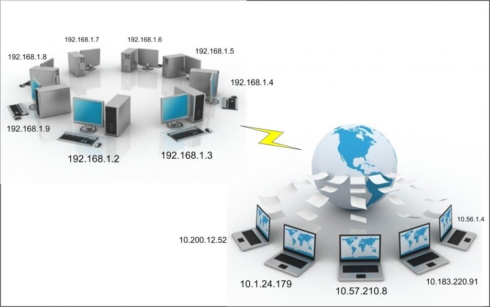
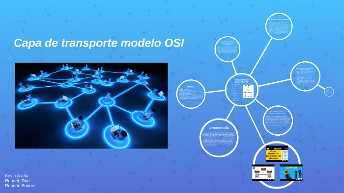
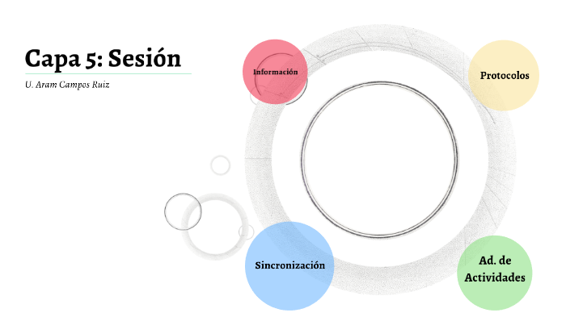
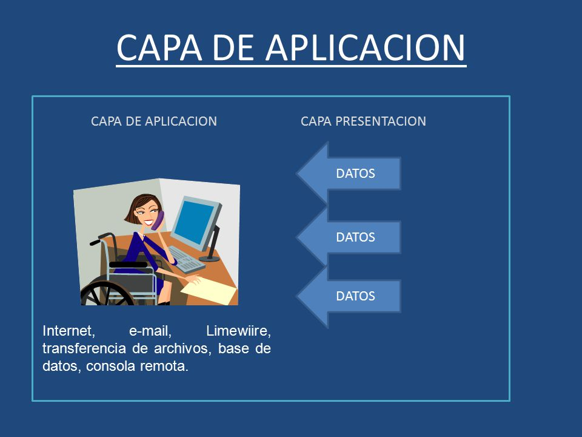

Contenido del curso
Conectividad
El objetivo fundamental y realmente obvio de una red es proveer conectividad entre sus nodos. Dependiendo de las necesidades de sus usuarios las redes pueden estar aisladas (por motivos de seguridad por ejemplo) o conectadas a otras redes.
Clases de Redes
Red de área personal
Es la que conecta dispositivos electrónicos dentro del área inmediata de un usuario. El tamaño de una PAN oscila entre unos centímetros y unos metros, uno de los ejemplos claros seria la conexion de una bocina Bluetooth y un teléfono inteligente
Red de área local
La red LAN puede servir a dos o tres usuarios en una oficina o miles de usuarios en la oficina central de una corporación. Se configura una LAN para que los nodos de la red puedan comunicarse y compartir recursos como impresoras o almacenamiento en red.
Red de área metropolitana
Una red de área metropolitana (MAN) es una red informática que conecta ordenadores de un área metropolitana, puede ser una ciudad, varias ciudades, pueblos o cualquier zona grande. Esta red es mayor que una red de área local (LAN), pero menor que una red de área amplia (WAN).
Red de área amplia
Son redes a gran escala que llegan a países y continentes. No conectan ordenadores individuales, sino otras redes como LAN o MAN. Las WAN pueden ser públicas o estar gestionadas por empresas para conectar varias ubicaciones a grandes distancias.
internet
Definido como “una red de cobertura mundial, con un único protocolo base para la creación de aplicaciones y servicios que es el TCP/IP, colaborativa, distribuida y homogénea que ofrece un conjunto de servicios bien conocidos tales como el Web, el Correo Electrónico, la Transferencia de Archivos, el Trabajo Remoto, las Máquinas de Búsqueda y otros”.
MODELO OSI
El modelo de interconexión de sistemas abiertos
Creado por la Organización Internacional de Normalización (ISO), que permite que diversos sistemas de comunicación se comuniquen usando protocolos estándar. El modelo OSI proporciona a los diferentes sistemas informáticos un estándar para comunicarse entre sí. Se entiende como un lenguaje universal de comunicación entre sistemas de redes informática.
¿Por qué es importante el modelo OSI?
CAPA FISICA
Son dispositivos físicos que participan en la transferencia de datos, se trata también de la capa en la que los datos se convierten en una secuencia de bits, que es una serie de unos y ceros. La capa física de ambos dispositivos debe consensuar además una convención de señales que permita distinguir los unos de los ceros en ambos dispositivos.

CAPA DE ENLACE DE DATOS.
Facilita la transferencia de datos entre dos dispositivos ubicados en una MISMA red. La capa de enlace de datos toma los paquetes de la capa de red y los distribuye en trozos más pequeños denominados tramas. Es también la responsable del control de flujo y de errores respecto de esa comunicación dentro de la red

CAPA DE RED.
Es la responsable de posibilitar las transferencias de datos entre dos redes diferentes. Si los dos dispositivos que se comunican están en la misma red, entonces no hará falta esta capa de red. Fragmenta en el dispositivo emisor, los datos de la capa de transporte en unidades más pequeñas llamadas paquetes y rearmarlos después en el dispositivo receptor, busca el mejor camino físico para que los datos lleguen a su destino, esto se conoce como enrutar.

CAPA DE TRANSPORTE.
Responsable de las comunicaciones de extremo a extremo entre dos dispositivos. La capa de transporte del dispositivo receptor es la responsable luego de rearmar tales segmentos y construir con ellos datos que la capa de sesión pueda consumir, es también la responsable del control de flujo y del control de errores el cual sirve para determinar la velocidad óptima de transmisión que garantice que un emisor con velocidad de conexión alta no apabulle a un receptor cuya conexión sea lenta.

CAPA DE SESION.
Responsable de la apertura y cierre de comunicaciones entre dos dispositivos. Ese tiempo que transcurre entre la apertura de la comunicación y el cierre de esta se conoce como sesión, garantiza que la sesión permanezca abierta el tiempo suficiente como para transferir todos los datos que se están intercambiando; tras esto, cerrará sin demora la sesión para evitar desperdicio de recursos. Sincroniza la transferencia de datos utilizando puntos de control.
CAPA DE PRESENTACIÓN
Es la que prepara los datos para que los pueda usar la capa de aplicación; en otras palabras, la capa 6 hace que los datos se preparen para su consumo por las aplicaciones. La capa de presentación es responsable de la traducción, el cifrado y la compresión de los datos. Dos dispositivos de comunicación que se conectan entre sí podrían estar usando distintos métodos de codificación, por lo que la capa 6 es la responsable de traducir los datos entrantes en una sintaxis que la capa de aplicación del dispositivo receptor pueda comprender.

CAPA DE APLICACIÓN
Esta es la única capa que interactúa directamente con los datos del usuario. Las aplicaciones de software, como navegadores web y clientes de correo electrónico, dependen de la capa de aplicación para iniciar comunicaciones. Las aplicaciones de software cliente no forman parte de la capa de aplicación; más bien, la capa de aplicación es responsable de los protocolos y la manipulación de datos de los que depende el software para presentar datos significativos al usuario. Los protocolos de la capa de aplicación incluyen HTTP, así como también SMTP (el Protocolo simple de transferencia por correo electrónico, uno de los protocolos que permiten las comunicaciones por este medio).